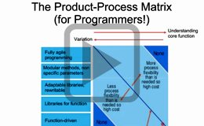
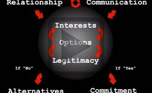
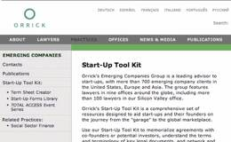
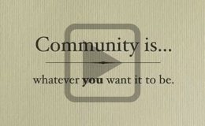
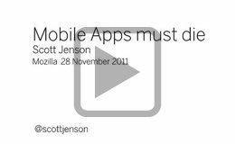
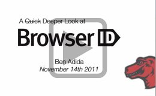
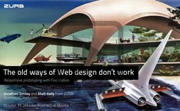
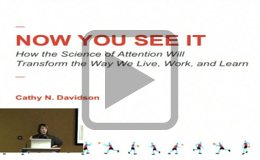
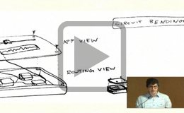
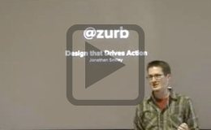

LearnFWD Webinars
These weekly interactive sessions are a key component of the WebFWD Open Innovation program, covering various aspects of lean product development and entrepreneurship. The presenters are world-class experts from diverse disciplines. Using BigBlueButton's conferencing technology we are able to share their knowledge across time and distance.
-

Energy: A Startup's Most Precious Resource
Jennifer Selby, Selby GroupLearn from certified personality typing expert Jennifer Selby Long how to manage your startup's most valuable resource: energy!
-

What Startups Can Learn From Scientists
Mason Edwards, SynbiotaWebFWD Fellow Mason Edwards shares key principles and guidelines with our teams on applying the scientific method to software development.
-

Building a Business around Open Source
Fred Dixon, Blindside NetworksFred Dixon, CEO of our BigBlueButton team, shares some best practices on generating revenues for OS companies in their earliest stages.
-

Ten Startup Mistakes
Larry Kane, OrrickLarry Kane, Partner at leading startup law firm Orrick, walks us through 10 Startup Mistakes to Avoid, from a legal perspective.
-

A Developer and a Designer Discuss Color
Adam Smith & Nick Totaro, Originate LabsLearn both the scientific and artistic perspectives on color and how to apply these to ensure your site best speaks to your audience.
-

The Science of Community Management
David Eaves, Public Policy EntrepreneurCommunity expert David Eaves outlines two key approaches for community managers to ensure positive experiences for their contributors.
-
Terms for Angel Financings
Larry Kane, OrrickOrrick Partner Larry Kane walks our teams through the differences between angel, seed and Series A rounds for early stage companies.
-
Open Source Community Marketing
Meghan Gill, MongoDBGrowing open source company MongoDB shares lessons on how to both build & serve its developer community, and optimize sales & marketing.
-
Incorporation Issues for Early-Stage Companies
Steven Levine, Fenwick & West LLPSteven Levine of Fenwick & West explores various issues early-stage companies should consider when making incorporation decisions.
-

Creative Licensing to Foster Creativity & Sharing
Eric Steuer, Creative CommonsWhat is creative licensing, who's using it today and why is it important for many early-stage web companies.
-

Term Sheets
Lowell Ness, OrrickOrrick, a leading law firm serving startups, walks us through their online tools helping entrepreneurs to structure financing term sheets.
-
Testing CASH Music
Jonathan "Duke" Leto, CASH MusicCASH Music's co-founder and tech lead walks us through his testing workflow and explains the value proposition of TDD and continuous integration.
-
The Apps of Tomorrow
Bill Walker, MozillaThe Mozilla Labs Apps Project uses Web standards and open technologies to bring app experiences to all of your devices, wherever you are.
-

It’s the Community, Not the Code
Jaisen Mathai, OpenPhotoWebFWD Fellow and OpenPhoto Project founder discusses the important role APIs play in building an engaged developer community.
-
Code doesn’t build software: *people* build software
Homa Bahrami, UC BerkeleyTools, techniques and best practices used by geo-distributed teams, from a study of Mozilla done at the Haas School of Business.
-

Mobile Apps must die
Scott Jenson, frog designA user experience pioneer and thoughtful futurist with frog design looks ahead to an apps environment in which discoverability and just-in-time interaction are key.
-

A Deeper Look at BrowserID
Ben Adida, MozillaBrowserID makes it easy for users to manage online identity and sign into websites. Plus it's super easy for developers to implement in their sites.
-
Best Practices for Open Source Compliance for Startups
Heather Meeker, Greenberg TaurigA legal expert on open source licensing and compliance shares strategies for mitigating risk and enabling decentralized growth.
-
Getting Started with User Testing
Diane Loviglio & Jinghua Zhang, MozillaMozilla User Researchers offer straightforward, simple tactics for user testing that lean teams can apply early and often in their product development.
-
How to Create Brand Names with Buzz
Alexandra Watkins, Eat My WordsEnlightening and practical tips for naming your product or company effectively, and affordable domain name strategies from a noted naming expert.
-

The old ways of Web design don't work
Jonathan Smiley & Matt Kelly, ZURBZURB Interactive Design introduces us to Foundation, their newly released open source framework for iterative and responsive design prototyping.
Presentations
A growing collection of brown bag talks and other presentations at Mozilla and around the world hosted and curated by WebFWD.
-
Building a Community
Asa Dotzler, MozillaMozillian Asa Dotzler draws from years of experience building the Firefox community to guide our teams on how to engage contributors.
-

Raising Money
Dan Rosen, Highland Capital PartnersDan Rosen of Highland Capital Partners shares how to effectively court investors: what to emphasize not only in the pitch, but before and after.
-

User Research In Practice
Diane Loviglio, MozillaMozillian Diane Loviglio takes us through a hands-on exercise to set your product up for success through direct, hands-on user research.
-

User Experience
Jennifer "Boriss" Morrow, MozillaJennifer Morrow aka "Boriss" debunks key myths around UX, and shows us some practical and take-no-prisoners ways to create great interface design.
-

Principles of Effective Design
Kevin Fox, UX DesignerFormer Mozillian and designer of Gmail and Google Calendar Kevin Fox takes us above the the weeds to key guiding principles for great design.
-

Software Development Best Practices
Mike Hanson, MozillaMozillian Mike Hanson shares how, when done with planning and thought, software development becomes a key asset for attracting more contributors.
-

Build Cheap and Scale
Zandr Milewski, MozillaLearn creative ways to support and scale your small project's systems and operations from Mozilla's Zandr Milewski.
-
WebFWD - An Overview
Diane Bisgeier, MozillaWebFWD’s program manager recaps highlights and lessons learned from the first six months (from launch to Summit), and looks ahead to 2012.
-

Now You See It
Cathy Davidson, Duke UniversityDuke University professor and author invites us to consider "how the brain science of attention will transform the way we live, work and learn."
-

WebFWD Summit - Team Pitches
Various, WebFWDFrom December's Summit, lightning talks by our Fellows introduce six WebFWD projects: BigBlueButton, CASHMusic, Meemoo, OpenPhoto, Synbiota and Verese.
-

Design Drives Action
Jonathan Smiley, ZURBZURB Interactive Design lead developer describes how thoughtful flow-driven interaction design can support user conversion and other desired outcomes.